Experimental design for functional imaging
2025-09-30
| Timetable week | Date | Lecture | Lecturer | Lecture |
|---|---|---|---|---|
| 02 | 2025-09-30 | 1 | Schluppeck / Griffiths | Overview, fMRI & study design. |
| 03 | 2025-10-07 | 2 | M Schürmann | Basic neuroanatomy |
| 04 | 2025-10-14 | 3 | D Venerio | Brain stimulation & study design. |
| 05 | 2025-10-21 | 4 | W v Heuven | Language |
| 06 | 2025-10-28 | Reading week (no lecture) | ||
| 07 | 2025-11-04 | 5 | D Schluppeck | Q&A, experimental design, coursework |
| 08 | 2025-11-11 | 6 | L Cragg | Developmental neuroimaging. |
| 09 | 2025-11-18 | 7 | B Griffiths | Vision + brain imaging |
| 10 | 2025-11-25 | 8 | J Derrfuss | Cognitive control, attention, and working memory. |
| 11 | 2025-12-02 | 9 | R Filik | Moral Cognition |
| 12 | 2025-12-09 | 10 | M Ashgar / D Schluppeck | Module recap, Touch / Somatosensation (+- decision making) |
Written assignment (max 3000 words) including a 250 word abstract.
Details on moodle (2024/25).
How can fMRI and/or brain stimulation be used to study different neuroscience questions? Cover at least two topics and/or methods from the course.
A brief introduction to fMRI.
Scope and limitations of the fMRI method.
Principles of experimental design in psychology.
Experimental design for fMRI.
By the end of the lecture you should be able to:
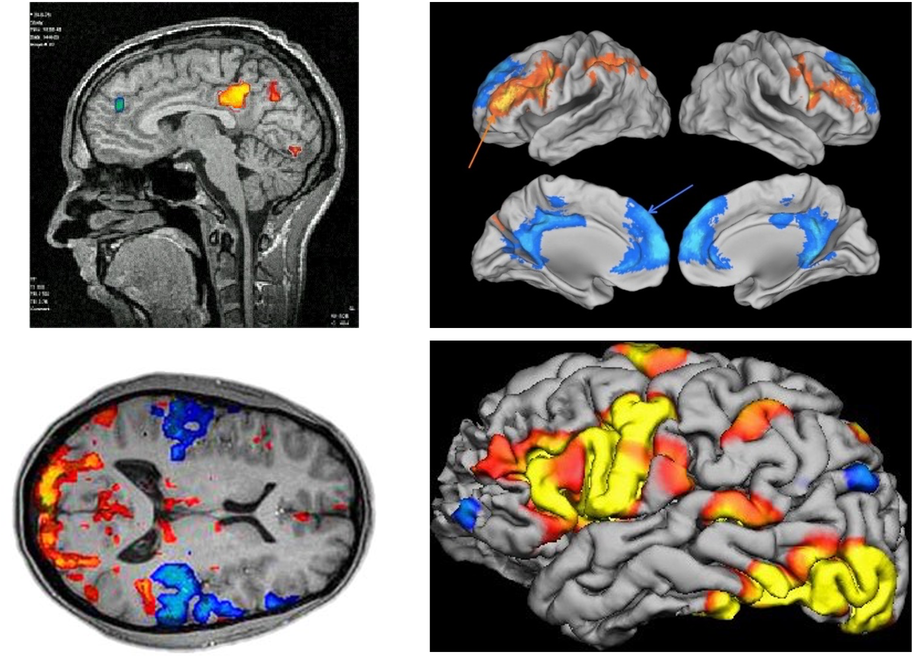
fMRI basics
MRI uses static and oscillating electromagnetic fields to detect different biological tissue properties.
functional MRI measures changes in blood oxygenation over time.
BOLD signal: blood oxygen level dependent
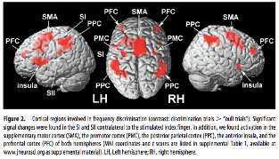
Where are the areas more active in Condition A than in Condition B?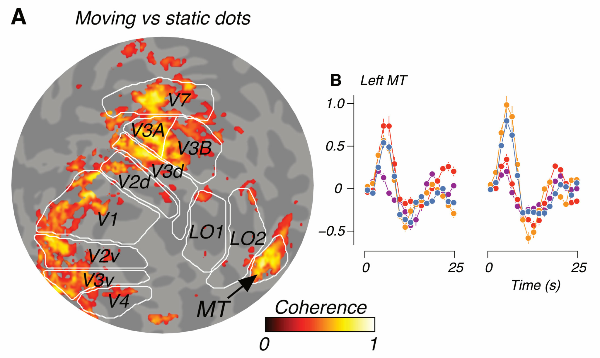
How do pre-defined regions of interest respond in different experimental conditions?Prepare
Theory ➡️ Research Question ➡️ Hypothesis
Plan & do
Experimental Design ➡️ Piloting ➡️ Data collection
Analyse & report
Preprocessing ➡️ Analysis ➡️ Interpretation
What does the blood-oxygen-level-dependent (BOLD) signal measure?
(fMRI) signals are weak + noisy.
Details of brain anatomy vary across individuals.
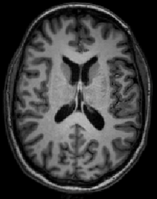
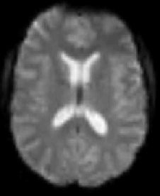
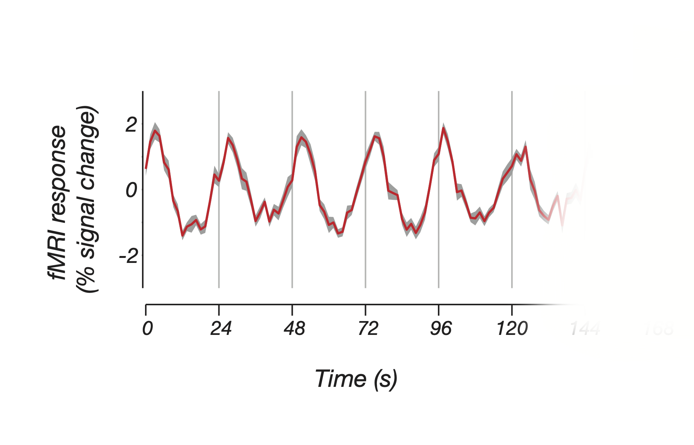
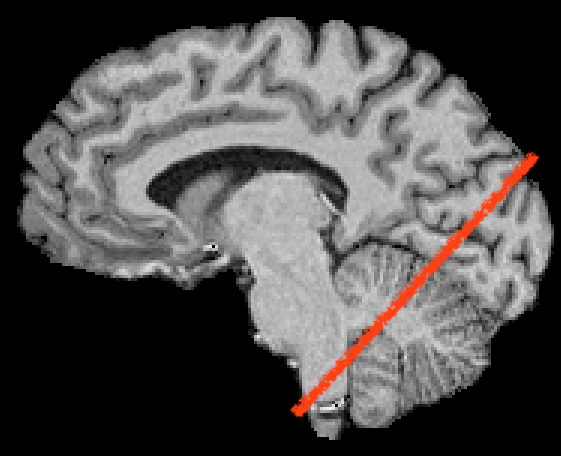
brain structures of interest are ~mm in size, sometimes separated by ~cm; need appropriate sampling
smaller voxels: less mixing of grey matter, white matter, CSF, veins, … reduced partial voluming
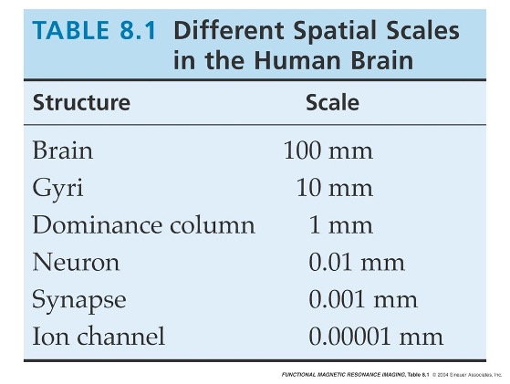
… if packing density in grey matter of cortex is ~50,000 cells / mm\(^3\)
| edge (mm) | volume (mm\(^3\)) | #cells in pure GM |
|---|---|---|
| 1 | 1 | 50k |
| 3 | 27 | 1.35M |
| 5 | 125 | 6.25M |
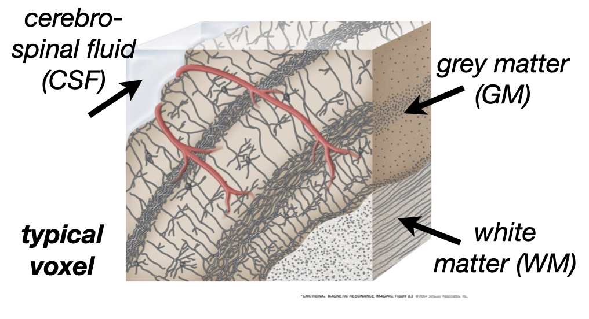
hardware (the scanner)
the subjects
signal-to-noise ratio - smaller voxels = proportionally more noise head motion, physiology, …
physiology
basis of the blood-oxygen-level-dependent (BOLD) signal
the shape of the response to a brief event is called the haemodynamic response function (HRF)
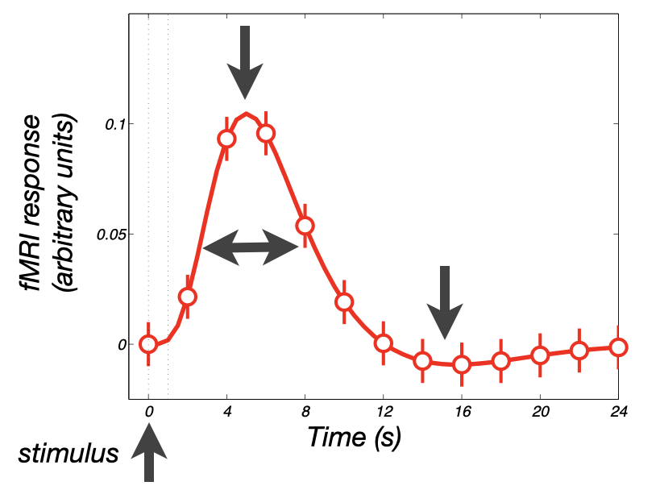
e.g. haemodynamic response to a 1s visual stimulus peaks several seconds later and is spread out
Overview of the fMRI method.
How to interpret fMRI data.
Limiting factors of fMRI.
Trade-off between temporal and spatial resolution.
Thinking about temporal resolution particularly important when designing fMRI experiments
Why do we need to worry about designing experiments?
variable which is intentionally manipulated (different manipulations are called conditions / levels)
measured variable
a property that co-varies with the IV
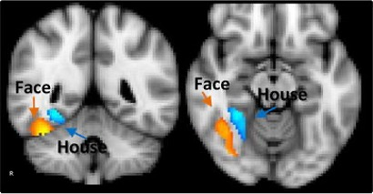
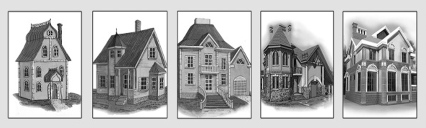
Counterbalancing: a process for removing confounds by ensuring they have equal influence at each level of the IV
Randomization: removing confounds by making sure they vary randomly at each level of the IV
Within-subjects designs are stronger as they control for:
Between-subjects designs are sometime unavoidable
Match the design to the research question…
All the above, plus…
Compare two very similar conditions that are assumed to differ only in one property.
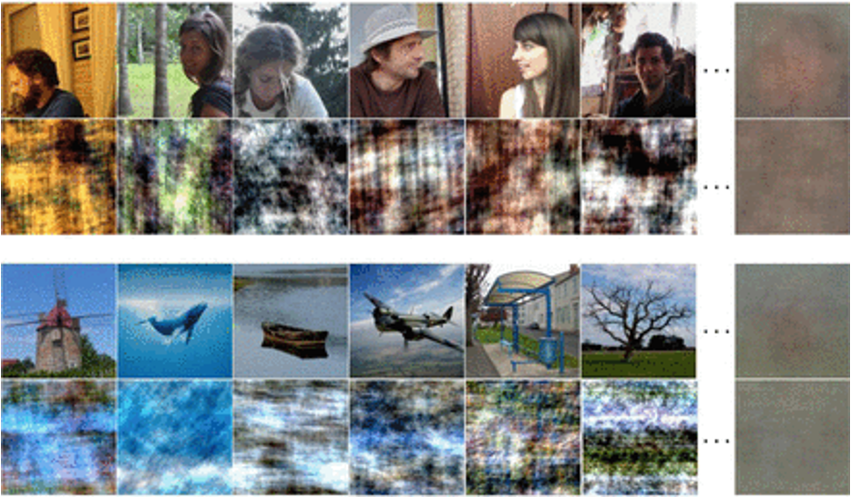
Block Designs – trials appear in alternating blocks (Task A, Task B)
Event Related Designs – stimuli are presented one-at-a-time in a random order
Mixed Designs – alternating blocks of tasks but with mixed trials
(resting state fMRI) - no task
Powerful for detecting signal changes if a good control is selected.
Not very good for estimating the shape of the HRF.
Sensitive to noise (scanner drift)
The block length is very important to consider
come in two “flavours”
Slow – stimulus followed by long inter-trial intervals (eg 10-15s rest)
Fast/Rapid variable – rapid stimulus presentation with variable, but short ISI (2s)
Principles of experimental psychology apply to good fMRI study design also.
Consider how the hypotheses make predictions about space and time (and do they align with the scope of what fMRI can measure).
The experimental design should be appropriate for the research question.
Timing of stimulus presentation is key!
See you soon!
This presentation was made with quarto and revealjs.
Uses a font called Atkinson Hyerlegible, which was designed to work better for people with low vision: available via google fonts.